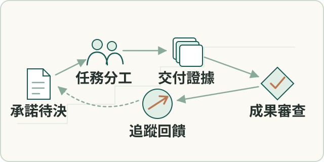

工程實務
交付追蹤與工程協作
建立可回查的專案管理空間，連結客戶需求、待決事項、issue、驗證及交付；另負責實習生題目與研究指導。
- 我的角色
- 本人建立專案管理空間，追蹤需求、負責人、待決事項、分支、測試及交付，逐張核實 issue 的完成條件；另設計實習生題目、教材及研究進度檢視。

工作流程示意（點圖放大）要解決的問題
跨 repo 工作及交付承諾需共同追蹤，實習研究需與產品責任分開。
輸入、處理與產出
- 輸入
- 客戶承諾、跨程式庫工項、待決事項與實習研究題目。
- 處理方式
- 以共同交付清單追蹤分工與驗證；研究先離線探索，正式產品納入另作判斷。
- 產出
- 可回查的交付進度、待決責任、研究評估與交接。
適用範圍
AI角色提供意見，本人裁定對外承諾；實習生研究成果保留作者歸屬。
核心問題與我的做法
用客戶承諾串起跨服務工項
工項散在多個程式庫，日誌看今天、分支看局部，卻看不出整案還欠客戶什麼。
建立以客戶承諾為主軸的追蹤空間，規格只引用並保留人工拍板。 本人建立階段、待決事項、工項映射與交付清單；多角色意見保留共識、分歧及缺口後交本人裁定。
跨程式庫進度、交付範圍與待決責任有共同入口；對外承諾和可驗收判斷仍由本人裁定。
實習研究先離線，產品納入另作決定
實習研究可能偏離交辦資料前提，也可能把探索直接接進正式產品。
從產品切真問題，讓研究交付評估、建議與原型，正式整合由本人判斷。 本人設計題目、教材與週報，區分研究與正式引擎責任；回看進度後指出資料前提未完成及題目偏移，要求重新對齊。
將探索研究與正式產品納入分開管理，留下研究方向、評估條件與交接責任；研究成果保留實習生的作者歸屬。
成果與驗證
形成可回查的專案與 issue 紀錄；逐張核實時撤回誤判已完成的項目，補強結案規則。實習生研究成果保留原作者歸屬。
YAML · Git worktree · AI agents